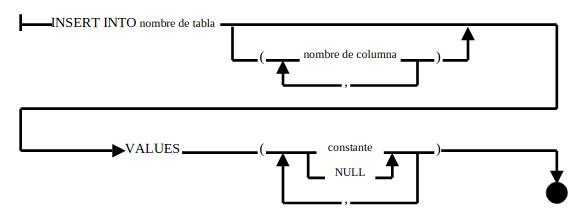

La sentencia INSERT de una fila añade una nueva fila a una tabla. Su diagrama sintáctico puede verse en la figura.
La cláusula INTO especifica la tabla que recibe la nueva fila (la tabla destino) y la cláusula VALUE especifica los valores de datos que la nueva fila contendrá.
La lista de columnas indica qué valor va a qué columna de la nueva fila.
